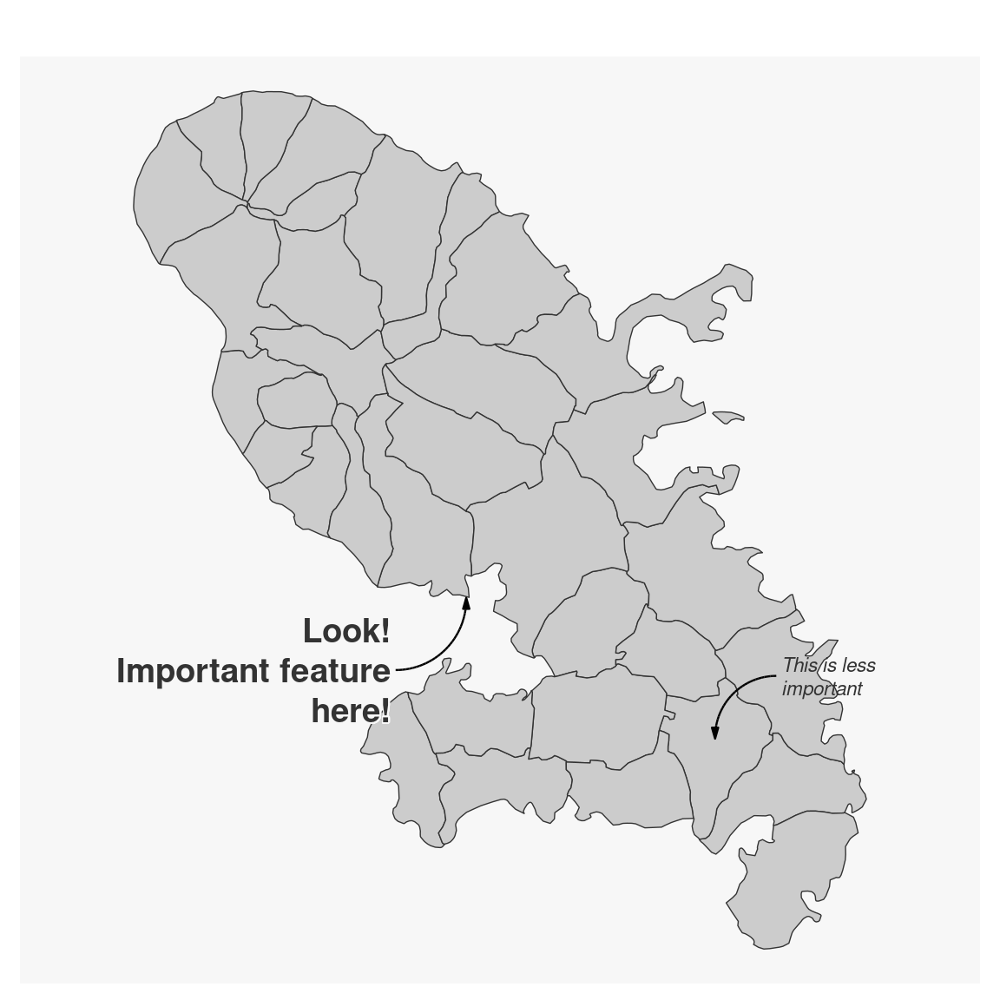

Plot an annotation on a map.
mf_annotation(
x,
txt,
pos = "topright",
cex = 0.8,
col_arrow,
col_txt,
halo = FALSE,
bg,
s = 1,
...
)an sf object with 1 row, a couple of coordinates (c(x, y)).
the text to display
position of the text, one of "topleft", "topright", "bottomright", "bottomleft"
size of the text
arrow color
text color
add a halo around the text
halo color
arrow size (min=1)
further text arguments.
No return value, an annotation is displayed.
mtq <- mf_get_mtq()
mf_map(mtq)
mf_annotation(
x = c(711167.8, 1614764),
txt = "Look!\nImportant feature\nhere!",
pos = "bottomleft", cex = 1.2, font = 2,
halo = TRUE, s = 1.5
)
mf_annotation(
x = mtq[20, ],
txt = "This is less\nimportant",
cex = .7, font = 3, s = 1.3
)
